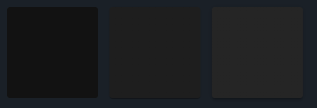

Web
React Essentials
Bertil Chapuis
## <i class="fas fa-tasks"></i> Overview of Today's Class - React - Next.js - Material UI
React
## <i class="fa-brands fa-react"></i> React React is a declarative and efficient JavaScript framework. It is the most popular JavaScript framework for building user interfaces.
## <i class="fa-brands fa-react"></i> Component-Based Architecture A React App is essentially a tree of components. Each React application has at least one root component, generally called `App`. This component is an entry point to the application.
## <i class="fa-brands fa-react"></i> React Component React components are reusable, self-contained pieces of UI that only need to be updated when its props or internal state change. We distinguish between two types of React components: functional and class components.
## <i class="fa-solid fa-check"></i> Functional Components A JavaScript function that accepts props and returns a React element. Since the introduction of React Hooks, functional components have become the standard way of writing React components. ```js const MyComponent = (props) => { return <div>{props.text}</div>; } export default MyComponent; ```
## <i class="fa-solid fa-xmark"></i> Class Components A simple JavaScript class that extends `React.Component` and eventually implements multiple functions. Class components are rarely used in modern React applications, they will potentially fade-away in the future. ```js class MyComponent extends React.Component { render() { return <div>{this.props.text}</div>; } } export default MyComponent; ```
## <i class="fa-brands fa-react"></i> Props Props are read-only data passed to a component by its parent. #### Passing props to child Prop is passed to a child component in a similar fashion to html attributes. ```js import MyComponent from './MyComponent'; const MyOtherComponent = () => { return <MyComponent text="hello world" />; } export default MyOtherComponent; ```
## <i class="fa-brands fa-react"></i> Props #### Receiving props from parent Functional components receive a single props argument. ```js const MyComponent = (props) => { return <div>{props.text}</div>; } export default MyComponent; ``` ...destructuring props ```js const MyComponent = ({text}) => { return <div>{text}</div>; } export default MyComponent; ```
## <i class="fa-brands fa-react"></i> Return multiple elements React component must return a single root element. Use a Fragment to wrap multiple elements. Empty tag `<></>` is a syntax shortcut for a React Fragment. ```js import MyComponent from './MyComponent'; const MyOtherComponent = (props) => { return <> <MyComponent text="hello world" /> <MyComponent text="hello world2" /> </>; } export default MyOtherComponent; ```
## <i class="fa-brands fa-react"></i> Rendering lists #### `map()` Use the `Array.prototype.map()` method to render a list of elements. ```js // texts : array of strings const MyListComponent = ({texts}) => { return <div>{ texts && texts.map((text, index) => <div key={index}>{text}</div>) }</div>; } export default MyListComponent; ```
## <i class="fa-brands fa-react"></i> Rendering lists #### Prop `key` It is a good practice to use unique keys on every element. React uses keys to identify elements that have changed. Not using `key` will result in a react warning. ```js // texts : array of strings const Text = ({text}) => <div>{text}</div>; const MyListComponent = ({texts}) => <div> {texts && texts.map((text, index) => <Text key={index} text={text} />)} </div>; export default MyListComponent; ``` Key can be passed to user-defined components as well.
## <i class="fa-brands fa-react"></i> Containment #### Pass components as children React components can be passed as children to other components. They will be accessible via `props.children`. ```js const Dialog = (props) => <div> {props.children} </div>; const WelcomeDialog = () => { return <Dialog> <h1>Welcome</h1> <p>Thank you for visiting our website!</p> </Dialog>; } export default WelcomeDialog; ``` `h1` and `p` elements will be accessible via `props.children` in `Dialog` component.
## <i class="fa-brands fa-react"></i> Containment #### Pass components as props Allows to receive multiple components from parent and to place each in a specific location. ```js const Dialog = ({title, body}) => { return <div> <header>{title}</header> <body>{body}</body> </div>; } const WelcomeDialog = () => { return <Dialog title={<h1>Welcome</h1>} body={<p>Thank you for visiting our website!</p>} />; } export default WelcomeDialog; ```
## <i class="fa-brands fa-react"></i>States State contains the data managed by the component. When the state changes, the component re-renders.
## <i class="fa-brands fa-react"></i> States #### `useState` hook `useState` takes an initial value as argument and returns an array of two elements : the current state and a setter function. ```js import React, { useState } from 'react'; // must be imported const Counter = () => { const [count, setCount] = useState(0); return <div> <p>You clicked {count} times</p> <button onClick={() => setCount(count + 1)}> Increment </button> </div>; } ``` - Always use the setter (`setCount`) function to update the state. - Never modify the state directly (`count += 1`). - State will not change immediately after the setter call.
## <i class="fa-brands fa-react"></i> States #### multiple states `useState` hook allows the component to have multiple separate states. ```js import React, { useState } from 'react'; // must be imported const InputText = ({label, value}) => { const [value, setValue] = useState(value); const [error, setError] = useState(false); const onChange = (e) => setValue(e.target.value); const onBlur = () => setError(value.length === 0); return <> <label>{label}</label> <input type="text" value={value} onChange={onChange} onBlur={onBlur} /> {error && <p>This field is required</p>} </>; }
## <i class="fa-brands fa-react"></i> States #### multiple `setState` calls The component will re-render for every `setState` call, however the DOM will be updated only once (reconciliation). ```js import React, { useState } from 'react'; // must be imported const InputText = ({label, value}) => { const [value, setValue] = useState(value); const [error, setError] = useState(false); const onChange = (e) => { setValue(e.target.value); setError(e.target.value.length === 0); } return <> <label>{label}</label> <input type="text" value={value} onChange={onChange} /> {error && <p>This field is required</p>} </>; }
## <i class="fa-brands fa-react"></i> States #### Complex objects Object reference must change to re-render, notice the use of a spread operator (`...`). ```js import React, { useState } from 'react'; // must be imported const InputText = ({label, value}) => { const [state, setState] = useState({ value: value, error: false }); const onChange = (e) => setState({ ...state, value: e.target.value}); const onBlur = () => setState({ ...state, error: state.value.length === 0}); return <> <label>{label}</label> <input type="text" value={value} onChange={onChange} onBlur={onBlur} /> {error && <p>This field is required</p>} </>; } ```
## <i class="fa-brands fa-react"></i> Lifting states up #### context It is a common pattern to have multiple sibling components that need to share the same state. `Lifting states up` is an approach that consist of refactoring the state up to the common ancestor of all the components that need to access the state. That common ancestor becomes the single source of truth.
## <i class="fa-brands fa-react"></i> Lifting states up #### Use case - TODO App - Code ```js import React, { useState } from 'react'; const TodoApp = () => { const [todos, setTodos] = useState([]); const addTodo = (todo) => setTodos([...todos, todo]); return <div> <TodoForm addTodo={addTodo} /> <TodoList todos={todos} /> </div>; } const TodoList = ({todos}) => <ul>{todos.map((todo, index) => <li key={index}>{todo}</li>)}</ul>; const TodoForm = ({addTodo}) => { const [value, setValue] = useState(''); // may have his internal state const onChange = (e) => setValue(e.target.value); const onSubmit = (e) => { e.preventDefault(); if (!value) return; addTodo(value); setValue(''); } return <form onSubmit={onSubmit}> <input type="text" value={value} onChange={onChange} /> <button type="submit">Add Todo</button> </form>; } ```
## <i class="fa-brands fa-react"></i> Lifting states up `TodoApp` is a common ancestor of `TodoForm` and `TodoList`. `TodoApp` is the single source of truth for `todos` state. Avoid passing the setState function (`setTodos`) as a prop to child components. Create callbacks instead (`addTodo`). Lifting states up might become difficult if the states are deeply nested. There are other ways around...
## <i class="fa-brands fa-react"></i> Hooks #### `useEffect` useEffect allows you to run side effects within your component such as fetching data, manually updating the DOM etc. It takes two arguments: - A function that runs when the component is first rendered. - (optional) An array of dependencies. If any of these dependencies change, the function will run again. (optional) It returns a cleanup function that runs when the component unmounts.
## <i class="fa-brands fa-react"></i> Hooks #### `useEffect` - Scenarios ```js useEffect(() => { // runs on every render }); useEffect(() => { // runs on first render }, []); useEffect(() => { // runs on first render and when any of dependencies changes }, [dependency1, dependency2]); ```
## <i class="fa-brands fa-react"></i> Hooks #### `useEffect` - Example ```js import React, { useEffect } from 'react'; const Timer = () => { const [time, setTime] = useState(0); useEffect(() => { const interval = setInterval(() => setTime(time => time + 1), 1000); return () => clearInterval(interval); }, []); return <div>{time}</div>; } ```
## <i class="fa-brands fa-react"></i> Hooks #### `useCallback` `useCallback` is a hook that returns a memoized version of the passed function. When you declare a function within a component, it will be recreated every time the component is rendered. If necessary, you can use useCallback to avoid this behavior. It takes two arguments : - A function that you want to memoize. - (optional) An array of dependencies. If any of these dependencies change, the function will run again.
## <i class="fa-brands fa-react"></i> Hooks #### `useCallback` - Example ```js const Counter = () => { const [count, setCount] = useState(0); const increment = useCallback(() => setCount(count => count + 1), [count]); return <div> <Button onClick={increment} label={Increment} /> <div>{count}</div> </div>; } const Button = ({onCLick, label}) => <button onClick={onCLick}>{label}</button>; ``` `increment` function is passed to the `<Button />` as a prop. If you dont use useCallback : - the `increment` function will be recreated every time the component is rendered. - this will trigger an unnecessary re-render of the `<Button />` as it takes `increment` reference as prop.
## <i class="fa-brands fa-react"></i> Hooks #### `useMemo` `useMemo` is similar to `useCallback`, they both take a function and array of dependencies as arguments. The difference is that `useMemo` returns a memoized value while `useCallback` returns a memoized function. `useCallback` returns a function uncalled while `useMemo` calls a function and returns a value. ```js const increment = () => setCount(count => count + 1); const memoizedIncrement = useMemo(() => increment, [count]); // is equivalent to: const memoizedIncrement = useCallback(increment, [count]); ```
## <i class="fa-brands fa-react"></i> Context Context is a react feature that allow to easily share data across deeply nested components. It is useful when alot of compoments use the same data, you avoid passing the data as props through every level of the component tree (prop drilling). Context acts as a single source of truth for global application data. We use `React.createContext` that returns a `Consumer` and a `Provider`.
## <i class="fa-brands fa-react"></i> Context - `Provider`, `Consumer`, and `useContext` `Provider` provides the state to his child components, no matter how deep they are. Using `Provider`, you can chose to scope the whole application or part of it. `Consumer` is a component that subscribes to the context and receives the data. An alternative to `Consumer` is the `useContext` hook. It's much prettier and handy when consuming multiple contexts.
## <i class="fa-brands fa-react"></i> Context - Declare context Usually a context is declared in a separate file. We will use `useContext` instead of `Consumer` to consume the context. Thus, no `Consumers` are defined. ```js import React, { useState, useContext } from 'react'; export const UserContext = createContext(); export const UserProvider = ({ children }) => { const [user, setUser] = useState({ name: 'John' }); const setName = name => setUser({ ...user, name }); return ( <UserContext.Provider value={[user, setName]}> {children} </UserContext.Provider> ); } ```
## <i class="fa-brands fa-react"></i> Context - Define the provider's scope `UserContext` contains the information relevant for the entire application. Wrap the whole `App` component in a `UserProvider` component. ```js import { UserProvider } from './context/UserContext'; const root = ReactDOM.createRoot(document.getElementById('root')); root.render( <UserProvider> <App /> </UserProvider> ); ```
## <i class="fa-brands fa-react"></i> Context - Consume the context ...somewhere within a deeply nested component who's ancestor is `UserProvider`. ```js import React, { useContext } from 'react'; import UserContext from './UserContext'; export const UserConsumer = () => { const [user, setName] = useContext(UserContext); return ( <div> <div>{user.name}</div> <button onClick={() => setName('Jane')}>Change name</button> </div> ); } ```
## <i class="fa-brands fa-react"></i> Context - with `useReducer` It’s a good practice to factor state manipulation within the context component. Therefore, we define `setName` function within the context. Dealing with the complex state logic lead to a large number of functions that are passed as props to the Provider's children. `useReducer` is an alternative to `useState`. It provides a single `dispatch` function for all of state manipulations. `useReducer` takes two arguments: - a reducer function that takes the current state and an action and returns the next state. - an initial state `useReducer` returns an array with the current state and a dispatch function.
## <i class="fa-brands fa-react"></i> Context - with `useReducer` #### Declare context ... with useReducer ```js import React, { createContext, useReducer, useContext } from 'react'; export const MusicContext = createContext(); export const MusicProvider = ({ children }) => { const [music, dispatch] = useReducer(reducer, { status: 'paused', current: undefined, queue: [] }); return ( <MusicContext.Provider value={{ music, dispatch }}> { children } </MusicContext.Provider> ); }; ```
## <i class="fa-brands fa-react"></i> Context - with `useReducer` #### Reducer function ```js const reducer = (state, action) => { switch (action.type) { case 'play-track': { return { ...state, status: 'playing' } } case 'pause-track': { return { ...state, status: 'paused' }; } /* ... */ default: return state; } }; ```
## <i class="fa-brands fa-react"></i> Context - with `useReducer` #### Using the `dispatch` function ```js import React, { useContext } from 'react'; import { IconButton } from '@mui/material'; import PlayArrowIcon from '@mui/icons-material/PlayArrow'; import PauseIcon from '@mui/icons-material/Pause'; import MusicContext from './MusicContext'; const MusicPlayer = () => { const { music: { current: track, status }, dispatch } = useContext(MusicContext); const handlePausePlayToggle = () => { if (status === 'paused' && track && track.preview ) { dispatch({ type: 'play-track' }); } else { dispatch({ type: 'pause-track' }); } }; return ( <IconButton aria-label="play/pause" onClick={clickPausePlayToggle}> {status === 'paused' ? <PlayArrowIcon /> : <PauseIcon />} </IconButton> ) } ```
## <i class="fas fa-question-circle"></i> Questions
Next.js
## <i class="fas fa-user-secret"></i> The React framework for production Opinionated React framework for building Web applications. React is a framework for building UI. Next.js if a framework that adds a set of features that enable you to build full stack production ready applications.
## <i class="fas fa-user-secret"></i> Main features - File-system based routing - Pre-rendering of pages (SSR, SSG, ISR) - API Routes https://nextjs.org/docs/getting-started
## <i class="fas fa-user-secret"></i> Routing #### `./pages` `./pages` - contains subfolders and pages used for file-system based routing. Each page is associated with a route based on its folder location and filename (excluding extension). A page is just like any other exported React component. ```js const About = () => <div>Hello World</div>; export default About; ``` The above page is saved as `./pages/about.js`. That makes it associated with the route `/about`.
## <i class="fas fa-user-secret"></i> Routing #### index routes Files name 'index.js' will be routed as the root of the directory. `./pages/index.js` route to `/` `./pages/about/index.js` route to `/about`
## <i class="fas fa-user-secret"></i> Routing #### Dynamic Routes Using bracket notation `[]`, you can dynamically route to a page based on the value of a parameter. `./pages/playlist/[id].js` route to `/playlist/[id]` ```js import { useRouter } from 'next/router'; const Playlist = () => { const { query: { id }} = useRouter(); return <div>Playlist {id}</div>; }; export default Playlist; ``` Next.js `useRouter` hook can be used to get the value of the parameter within the page component.
## <i class="fas fa-user-secret"></i> Rendering modes #### Client-side rendering (CSR) Traditional way of rendering in a React App. Server sends a blank page bundled with JavaScript to the client. The client renders a blank page, start interpreting the JavaScript, eventually fetching the data, and re-rendering the page. #### Pre-rendering - Static site generation (SSG) - Server-side rendering (SSR) Next.js supports all three rendering modes.
## <i class="fas fa-user-secret"></i> Client-side rendering (CSR) Useful for highly interactive pages that does not require SEO. The CSR can be applied on **per-component** basis, you can have a component using CSR inside of a pre-rendered page. #### Client-side data fetching #### Using `useEffect` We can use traditional React side-effects hook `useEffect` to trigger data fetching. #### Using `SWR` SWR is a React hook for data fetching provided by SWR. Next.js highly recommends using `SWR` for client-side data fetching. https://swr.vercel.app/
## <i class="fas fa-user-secret"></i> Client-side rendering (CSR) #### Using `SWR` ```js import { useSWR } from 'swr'; import { useRouter } from 'next/router'; const Playlist = () => { const { query: { id }} = useRouter(); const { data, error } = useSWR(`/api/playlist/${id}`, (id ? (...args) => fetch(...args).then((res) => res.json()) : null)); if (error) return <div>failed to load</div>; if (!data) return <div>loading...</div>; return <div>{data.title}</div>; } export default Playlist; ```
## <i class="fas fa-user-secret"></i> Pre-rendering Next.js will pre-render the page HTML content before sending it to the browser. This can lead to a significant performance and SEO boost. The page is associated with a JavaScript code for that page. Once the HTML is loaded in the browser, the JavaScript code runs, and the page becomes interactive (hydration). Next.js offers two ways to pre-render pages: - Static site generation (SSG) - Server-side rendering (SSR) The choice is about **when** the page is rendered. SSR and SSG strategies can apply on **per-page** basis.
## <i class="fas fa-user-secret"></i> Pre-rendering #### Static Site Generation (SSG) A process of generating static HTML files on **build** time. Great strategy when the page is unlikely to change. #### Incremental Static Regeneration (ISR) Simply by specifying a **revalidation period**, ISR allow to create or update SSG pages after the build time.
## <i class="fas fa-user-secret"></i> Pre-rendering #### Static Site Generation (SSG) ```js const Playlist = ({playlist}) => <div>Playlist {playlist.title}</div>; export async function getStaticPaths() { const res = await fetch('http://localhost:3000/api/playlists'); const playlists = await res.json(); return { paths: playlists.map((article) => ({ params: { id: playlists.id.toString() } })), fallback: false } } // `getStaticPaths` requires using `getStaticProps` export async function getStaticProps(context) { const res = await fetch(`http://localhost:3000/api/playlist/${context.params.id}`); const playlist = await res.json(); return { props: { playlist } } } ```
## <i class="fas fa-user-secret"></i> Pre-rendering #### Static Site Generation (SSG) `getStaticPaths` identify all the paths that will be generated. `getStaticProps` fetch the data for a particular page. These functions run during the build in production. Their code is removed from the client-side bundle.
## <i class="fas fa-user-secret"></i> Pre-rendering #### Incremental Static Regeneration (ISR) To activate ISR, you simply return a `revalidate` property in the `getStaticProps` function. In this example, we set the revalidation period to 60 seconds. ```js export async function getStaticProps(context) { const res = await fetch(`http://localhost:3000/api/playlist/${context.params.id}`); const playlist = await res.json(); return { props: { playlist }, revalidate: 60 } } ```
## <i class="fas fa-user-secret"></i> Pre-rendering #### Server-side Rendering (SSR) This method is great for pages with frequently changing data. The data fetching and HTML generation is done on the server on per-request basis. ```js const Playlist = ({playlist}) => <div>Playlist {playlist.title}</div>; export async function getServerSideProps(context) { const res = await fetch(`http://localhost:3000/api/playlist/${context.params.id}`); const playlist = await res.json(); return { props: { playlist } } } ``` If you do not need to refresh the data for each request, you may consider CSR or SSG.
## <i class="fas fa-user-secret"></i> Pre-rendering Notice how the code of our page component remain the same no matter the pre-rendering method we use. This enables us to easily switch between the data fetching strategies on the fly, and to tryout different scenarios.
## <i class="fas fa-user-secret"></i> API Routes Next.js offers a simple way to expose API endpoints. In a similar fashion to file-system based routing, you can create your API routes in `./pages/api/` folder. Each API Route must define a `request handler` in form of a default export function. The request handler receives the request (**req**) and response (**res**) objects as arguments.
## <i class="fas fa-user-secret"></i> API Routes #### Request Handler Defined in : `./pages/api/hello-world.js` ```js const handler = async (req, res) => { res.statusCode = 200; res.json({ message: 'Hello World' }); } export default handler; ``` Accessible via : `http://domain:port/api/hello-world`
## <i class="fas fa-user-secret"></i> API Routes #### Dynamic API Routes Using bracket notation `[]`, you can create dynamic API routes. The parameter can be found in the `req` argument. Defined in : `./pages/api/playlists/[playlistId].js` ```js const handler = async ({ query: { playlistId } }, res) => { const response = await fetch(`https://api.deezer.com/playlist/${playlistId}`); const data = await response.json(); if (data.error) { return res.status(500).json(data.error); } res.json(data); } export default handler; ``` Accessible via : `http://domain:port/api/playlists/10361569942`
## <i class="fas fa-question-circle"></i> Questions
MUI - Material UI
## <i class="fas fa-user-secret"></i> The React component library Material-UI (MUI) is an open-source UI component library for React. A set of pre-made reusable components that help you build modern UI without extensive knowledge of CSS. Built-on `Material Design` design language developed by Google. ```node npm install @mui/material @emotion/react @emotion/styled ```
## <i class="fas fa-user-secret"></i> All Components https://mui.com/material-ui/
Let’s check some of them
## <i class="fas fa-user-secret"></i> Navigation - Drawer - Menu - etc.
## <i class="fas fa-user-secret"></i> Navigation #### Drawer <img style="float: left; margin:0; padding:0;margin-right:2rem;" src="./images/mui/drawer.PNG"> Sidebars (Navigation Drawers) that are anchored to a side of the screen. They can be permanently or temporarily displayed and have fixed size. Useful for displaying navigation menu, important notifications or other things that should be accessible throughout the application. `Drawer` uses `Paper` container for visual appearance. https://mui.com/material-ui/react-drawer/
## <i class="fas fa-user-secret"></i> Navigation #### Menu <img style="float: left; margin:0; padding:0;margin-right:2rem;" src="./images/mui/menu.PNG"> Menu contains a list of actions displayed on a temporary surface. You can open the menu using a button or any other clickable component. https://mui.com/material-ui/react-menu/
## <i class="fas fa-user-secret"></i> Layout - Box - Grid - Stack - etc.
## <i class="fas fa-user-secret"></i> Layout #### Box A style-less wrapper component on which you can add specific style attributes. You can specify its CSS properties using the [sx](https://mui.com/system/getting-started/the-sx-prop/) prop. https://mui.com/material-ui/react-box/ #### sx prop All MUI components are accepting the `sx` prop. It is a shortcut to define inline styles. Most of the CSS properties, converted to **camelCase**, are available. `sx` have access to the theme variables. https://mui.com/system/getting-started/the-sx-prop/
## <i class="fas fa-user-secret"></i> Layout #### Grid A responsive layout component (`container`) that arranges its children (`items`) in a specific way. You can specify a direction, spacing (row & column), and alignment of the items. <img style="float: left; margin:0; padding:0;margin-right:2rem;" src="./images/mui/grid.PNG"> It is possible to specify the portion of the container that each item take. These portions can be different for each viewport size (called **breakpoints**) [xs, sm, md, lg, xl]. #### Default breakpoints: - xs (extra-small) applies on a viewport of width between 0px and 600px - sm (small) - between 600px and 900px - etc. In this example, the first item (xs=8) takes 8/12 of the container width when the viewport width is between 0px and 600px. If no other breakpoints are specified, the xs will continue to apply on viewports that are larger than 600px. https://mui.com/material-ui/react-grid/ https://mui.com/material-ui/customization/breakpoints/#default-breakpoints
## <i class="fas fa-user-secret"></i> Layout #### Stack <img style="float: left; margin:0; padding:0;margin-right:2rem;" src="./images/mui/stack2.PNG"> A simple layout component that manages immediate children. Stack is one-dimensional, while Grid is two-dimensional. You can specify the direction (`row` in this example), spacing and dividers between its children. https://mui.com/material-ui/react-stack/
## <i class="fas fa-user-secret"></i> Surfaces - Paper - Card - etc.
## <i class="fas fa-user-secret"></i> Surfaces #### Paper  A basic container component with visible features. Used to group together UI elements that share common purpose. Come in different variants such as outlined, contained, and raised. You can also specify the elevation (shadow), and enable/disable rounded corners. https://mui.com/material-ui/react-paper/
## <i class="fas fa-user-secret"></i> Surfaces #### Card <img style="float: left; margin:0; padding:0;margin-right:2rem;" src="./images/mui/card.PNG"> Card is a container component that adds some extra structuring capabilities for its content (CardHeader, CardContent, CardActions, CardMedia). It uses Paper as a base component, all the props related to Paper are available. A Card can also be `raised`. https://mui.com/material-ui/react-card/
## <i class="fas fa-user-secret"></i> Data Display - Typography - List - Icons - etc.
## <i class="fas fa-user-secret"></i> Data Display #### Typography <img style="float: left; margin:0; padding:0;margin-right:2rem;" src="./images/mui/typography.PNG"> Typography is a text container component. In comes with a number of variants : 'body1' , 'body2' , 'button' , 'caption' , 'h1' , 'h2' , 'h3' , 'h4' , 'h5' , 'h6' , 'inherit' , 'overline' , 'subtitle1' , 'subtitle2' , string. `variantMapping` links a variant with a particular semantic element (html tag). `variantMappings` and styling can be changed globally using the theme. https://mui.com/material-ui/react-typography/
## <i class="fas fa-user-secret"></i> Data Display #### List <img style="float: left; margin:0; padding:0;margin-right:2rem;" src="./images/mui/list.PNG"> `List` is a container component that arranges its `items` vertically. `ListItem` is a component that can be used to render a single item in the list. You can place a component on the right-side of the `ListItem` by using `secondaryAction` prop or `ListItemSecondaryAction` container component as last child. https://mui.com/material-ui/react-list/ https://mui.com/material-ui/api/list-item/
## <i class="fas fa-user-secret"></i> Data Display #### Icons MUI comes with a library with over 2000 SVG icons by Google. Each SVG icon can be imported as a React component from `@mui/icons-material` package. To install the icons package : ``` npm install @mui/icons-material ``` https://mui.com/material-ui/icons/ https://mui.com/material-ui/material-icons/
## <i class="fas fa-user-secret"></i> Inputs - Button - Slider - etc.
## <i class="fas fa-user-secret"></i> Data Display #### Button <img style="float: left; margin:0; padding:0;margin-right:2rem;" src="./images/mui/button.PNG"> `Button` is a basic button component. You can specify its variants, colors and sizes. <br /><br /> `IconButton` is a button component that take an `Icon` as a child. It does not render any text and can be useful for toolbars. For buttons that have both icon and text, you can use `Button` and specify the `startIcon` prop. https://mui.com/material-ui/react-button/ https://mui.com/material-ui/api/icon-button/
## <i class="fas fa-user-secret"></i> Data Display #### Slider <img style="float: left; margin:0; padding:0;margin-right:2rem;" src="./images/mui/slider.PNG"> `Slider` is a component that allows you to select a single value from a range. You can specify the range using `min` and `max` props. Selection is continuous by default but can be discrete if you specify the `step` prop. <br /><br /><br /><br /><br /> Events : - onChange : fired when the value changes. - onChangeCommitted : fired when the value changes and the thumb is released. - etc.